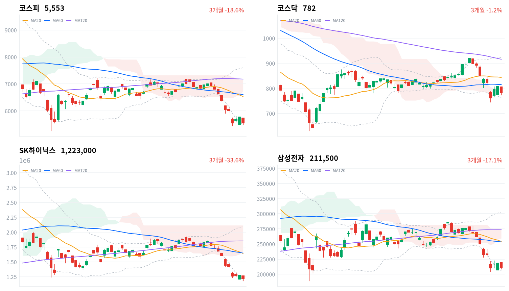

직전 미국장이 오르고 한국장 동안 미국 선물도 올랐지만, 코스피는 2거래일 반등분을 하루 만에 모두 내줬다. 외국인과 기관이 함께 팔았고, 금융감독원장의 솔리다임 발언 뒤 SK그룹주가, 현대로템 실적 부진 뒤 방산주가 크게 내렸다.
하락의 상당 부분은 해외 요인보다 국내 개별 재료와 기관 매도에서 왔다고 본다. 10월 21일 마감까지의 외국인 수급과 10월 23일 SK하이닉스·삼성전자의 상대 수익률이 다음 판단 기준이다.
미국 기술주가 오른 다음 날 코스피는 아시아 네 지수 평균보다 2.82%포인트 더 내렸다. 외국인과 기관이 함께 순매도했고, 기관 매도(9,989억원)가 외국인(5,225억원)의 두 배 가까웠다(당일 잠정). 같은 날 SK그룹주와 방산주에는 각각 국내 개별 재료가 나왔다.
장 마감 뒤 보도는 AI 투자 수익성 우려, 글로벌 금리 상승, 원화 강세로 하락을 설명한다. 이 요인들이 반도체 대형주를 누른다는 데는 동의하지만, 오늘 낙폭 가운데 한국에만 있는 몫은 설명하지 못한다. 직전 미국 세션에서 나스닥이 1.11% 올랐고 대만가권은 1.13% 내리는 데 그쳤는데, SK하이닉스는 4.23% 내려 삼성전자(-2.98%)보다도 약했다.
오늘 하락은 해외 요인 위에 국내 개별 재료와 기관 매도가 겹친 결과로 판단한다. 금융감독원장이 솔리다임의 미국 상장을 중복상장으로 본다고 말한 뒤 SK하이닉스·SK스퀘어·SK가 함께 내렸고, 현대로템의 3분기 실적이 시장 기대를 밑돈 뒤 방산주가 하루에 10% 안팎 빠졌다. 외국인 매도 재개가 하락의 본류이고 개별 재료는 부수적이었을 수도 있으나, 기관 순매도가 더 컸고 직전 미국 반도체가 강했다는 점에서 국내 요인 쪽이 더 설득력 있는 설명이다. 업종별 투자자 순매매 자료가 없어 어느 주체가 어느 업종을 팔았는지는 확인하지 못했다. 두 설명은 10월 21일 마감까지의 외국인 코스피 수급과, 10월 23일까지 SK하이닉스가 삼성전자보다 약하게 남는지로 확인한다.
2거래일 반등을 하루에 반납한 만큼 지수가 바닥을 확인했다고 보기는 이르다. 국내 재료가 걸린 SK그룹주와 방산주는 그 재료가 풀리기 전까지 지수보다 약할 여지가 있고, 그래서 새로 제안할 상품은 없다. 가장 가까운 확인은 10월 21일 마감까지 세 세션의 외국인 코스피 수급과 그날 종가다.
코스피가 10월 20일 기준 20일 저점 5,451 아래로 마감하면, 오늘 하락이 개별 재료가 겹친 하루 낙폭에 그치지 않고 시장 전반의 매도로 이어지는 것으로 보고 판단을 철회한다. 이 레벨은 같은 날 기준 볼린저 밴드 하단(5,462) 바로 아래에 있다. SK하이닉스에 대한 지배구조 할인 해석은 10월 23일 KRX 종가 기준 10월 20일 대비 수익률이 삼성전자보다 2%포인트 넘게 높으면 철회한다.
출처: 서울경제, 마이데일리, MBC, 메트로서울, 아주경제
직전 미국 10월 19일 세션은 기술주가 이끌었다. 나스닥이 1.11%, S&P500이 0.41% 올랐고 다우만 0.07% 내렸다. 오늘 아시아는 대체로 약했다. 닛케이(-1.30%)·항셍(-1.32%)·대만가권이 내리고 상해종합(+0.12%)만 올랐는데, 코스피는 네 지수 평균(-0.91%)보다 훨씬 크게 내렸다.
시가는 전일 종가(5,768)보다 0.6% 낮은 5,734였고, 이 시가가 그날 고가였다. 한국 정규장 동안 미국 선물은 S&P 선물과 나스닥 선물이 모두 0.16% 올라, 장중 매도에 바깥 부담이 더해지지는 않았다.
코스피 마감은 하루 범위(240포인트)의 아래쪽 4분의 1, 장중 저점 5,493보다 60포인트 위였다. 코스닥도 시가 부근 고점에서 밀려 하루 범위의 아래쪽에서 마감했다. 원화는 하락장에서도 강세를 유지했다.
지수를 끌어내린 것은 기관과 외국인의 동반 매도, 그리고 국내 재료가 걸린 SK그룹주와 방산주였다. 시간외 거래와 투자자별 장중 흐름은 자료가 없어, 오후 저점 이후의 반등을 어느 주체가 만들었는지는 가리지 못한다.
출처: 헤럴드경제, 서울경제
코스피는 3.73% 내린 5,553, 코스닥은 3.33% 내린 782로 마감했다. 종가는 반등이 시작되기 전인 10월 15일 종가보다도 낮아, 10월 16일과 19일의 상승분이 모두 사라졌다.
| 지수 | 종가 | 등락률 | 시가 | 고가 | 저가 | 전일 종가 |
|---|---|---|---|---|---|---|
| 코스피 | 5,552.74 | -3.73% | 5,733.57 | 5,733.57 | 5,493.24 | 5,768.01 |
| 코스닥 | 781.97 | -3.33% | 805.37 | 807.22 | 773.32 | 808.89 |
장중에는 한 번 반등 시도가 있었다. 코스피는 오전에 5,570선까지 밀린 뒤 정오 무렵 5,620 부근까지 회복했지만, 오후에 다시 매도가 나와 저점을 낮췄다. 오전 낙폭을 메우려던 매수가 오후까지 이어지지 못한 하루다.
| 주체 | 순매수(억원) |
|---|---|
| 개인 | +8,909 |
| 외국인 | -5,225 |
| 기관 | -9,989 |
| 주체 | 순매수(억원) |
|---|---|
| 개인 | +2,916 |
| 외국인 | -1,820 |
| 기관 | -1,102 |
오늘 코스피 낙폭을 가장 크게 키운 주체는 기관이다. 기관은 9,989억원을 순매도했다(전일 5,302억원 순매수, 당일 잠정). 외국인은 5,225억원을 순매도해(전일 947억원 순매수) 3거래일 만에 순매도로 돌아섰고, 개인이 8,909억원을 순매수해(전일 1조1,767억원 순매도) 두 주체의 물량을 받았다. 전일 값은 오늘 다시 받은 잠정치로, 어제 글에 쓴 값(외국인 1,027억원, 기관 5,516억원 순매수)보다 작다. 장 마감 직후 보도는 외국인 약 5,300억원, 기관 약 1조48억원 순매도로 전해 확정치에서 숫자가 조금 바뀔 수 있지만 방향은 같다.
하루 수조원대였던 10월 둘째 주와 비교하면 외국인 매도 규모는 아직 작다. 코스닥에서도 외국인(1,820억원)과 기관(1,102억원)이 함께 팔고 개인(2,916억원)이 샀다.
장중 누적 수급과 프로그램 매매는 받을 수 있는 자료가 없어 싣지 않는다.
출처: 머니투데이
| 순위 | 종목/ETF | 구분 | 거래대금 | 비고 |
|---|---|---|---|---|
| 1 | SK하이닉스 | 개별주 | 4.10조원 | - |
| 2 | 삼성전자 | 개별주 | 3.26조원 | - |
| 3 | 반도체 테마 ETF | 테마·롱 | 1.84조원 | 29종 합산 |
| 4 | 삼성전기 | 개별주 | 0.81조원 | - |
| 5 | KODEX CD금리액티브(합성) | 단기금리·현금성 | 0.74조원 | - |
| 6 | 2차전지 테마 ETF | 테마·롱 | 0.57조원 | 14종 합산 |
| 7 | 삼성전자우 | 개별주 | 0.49조원 | - |
| 8 | 삼성SDI | 개별주 | 0.39조원 | - |
| 9 | TIGER CD1년금리액티브(합성) | 단기금리·현금성 | 0.34조원 | - |
| 10 | SK스퀘어 | 개별주 | 0.34조원 | - |
단위 백만원 원본을 조 단위로 환산했다. 같은 기초자산 ETF는 방향별로, 같은 테마 섹터 ETF는 테마별로 묶고 지수·해외 ETF는 제외했다.
거래는 이날도 반도체에 몰렸고, 그 반도체가 지수 하락의 한가운데 있었다. SK하이닉스(4.10조원)·삼성전자(3.26조원)·반도체 테마 ETF 29종 합산(1.84조원)이 1~3위였고, 솔리다임 발언의 영향을 받은 SK스퀘어도 10위에 들었다. 대표 ETF 기준 반도체 섹터는 하루 4.84% 내렸다. 2차전지는 테마 ETF 14종 합산과 삼성SDI가 6위와 8위에 남았지만, 전날과 달리 주가는 크게 내렸다. 단기금리를 따르는 CD금리 상품 두 종도 상위 열 줄을 지켰다.
하락은 업종을 가리지 않았다. 대표 ETF 기준 12개 섹터가 모두 내렸고, 방산(-10.26%)·조선(-7.31%)·2차전지(-5.95%)의 낙폭이 반도체(-4.84%)보다 컸다. 은행(-1.17%)과 소프트웨어(-1.79%)만 상대적으로 덜 내렸다. 네이버 업종 분류로 받은 등락률 상위 60개 업종 가운데 오른 업종은 담배와 다각화된통신서비스 둘뿐이고, 증권은 39종목 가운데 한 종목도 오르지 못했다. 일부 대형주가 아니라 시장 전반이 함께 내린 날이다.
기간을 넓히면 방산의 약세가 두드러진다. 방산은 한 달 21.43%, 6개월 49.29% 내려 6개월 수익률이 12개 섹터 가운데 가장 낮고, 반도체는 한 주 17.05% 내렸지만 6개월로는 여전히 유일하게 오른 섹터다.
반도체 대형주가 지수만큼 또는 그보다 더 내렸다(SK하이닉스 -4.23%, 삼성전자 -2.98%, SK스퀘어 -5.00%, 한미반도체 -5.71%). 이찬진 금융감독원장이 19일 국정감사에서 솔리다임의 미국 상장이 중복상장에 저촉된다는 판단을 금융위원회와 금감원이 하고 있다고 말한 뒤 SK하이닉스·SK스퀘어·SK(-6.45%)가 함께 내렸다는 보도가 나왔다. SK하이닉스는 확정된 바 없다는 입장이다. 삼성전자와 한미반도체는 AI 투자 수익성 우려 속 반도체 동반 약세로 보도됐고, 개별 재료는 확인되지 않았다.
코리아써키트는 하락장에서 크게 올랐다(코리아써키트 +12.4%). 메리츠증권이 3분기 실적 추정치를 올렸고, 서버용 메모리 모듈 SoCAMM 양산 매출이 7월부터 본격화했다는 보도가 나왔다.
우리금융지주는 소폭 올랐다(우리금융지주 +0.47%). 확인된 재료 없음.
방산 대형주가 급락했다(한화에어로스페이스 -11.71%, 한화시스템 -13.90%, 현대로템 -13.70%, LIG디펜스앤에어로스페이스 -8.21%). 현대로템의 3분기 영업이익(2,471억원)이 컨센서스를 약 10.5% 밑돌았고, SK증권이 원화 강세·해외 수주 지연·내년 수익성 둔화 우려를 들어 목표가를 31만원에서 18만원으로 내렸다는 보도가 나왔다. 미국 방산주 약세와 미국 국방예산 불확실성도 거론됐다. 현대로템은 52주 신저가를 기록했고, 방산 4사의 시가총액은 하루에 약 10조6천억원 줄었다는 보도가 나왔다.
2차전지 셀주는 전날 급등분을 되돌렸다(삼성SDI -6.08%, LG에너지솔루션 -4.17%). 확인된 재료 없음.
이 밖에 LS에코에너지(-14.59%)·한화솔루션(-10.01%)·SK이노베이션(-9.14%)·LG화학(-8.35%)이 크게 내렸고, 조선주 HD현대중공업(-7.96%)·한화오션(-8.26%)도 약했다.
출처: 마이데일리, MBC, 전자신문, 서울경제, 아주경제, 투데이코리아, 메트로서울, 아이뉴스24, 현대경제신문, 파이낸셜뉴스, 스페셜타임스, 한국경제
주식이 급락한 날 국고채 장기금리는 내렸다. 국고채 10년물은 2.9bp 내린 4.176%, 회사채 AA- 3년물은 2.6bp 내린 4.534%였고, CD 91일물만 1.0bp 오른 3.26%였다.
| 지표 | 금리 | 전일比(bp) | 기준일 |
|---|---|---|---|
| 국고채 10년 | 4.176% | -2.9 | 2026-10-20 |
| CD 91일 | 3.260% | +1.0 | 2026-10-20 |
| 회사채 AA- 3년 | 4.534% | -2.6 | 2026-10-20 |
| 한국은행 기준금리 | 3.000% | 0.0 | 2026-09 |
한국은행 경제통계시스템(ECOS) 기준. 국고채 3년물은 이날 값이 집계되지 않아 표에서 뺐다. 기준금리는 2026년 9월 기준 값이다.
장기금리 하락은 주식 급락과 함께 안전자산 수요가 늘었다는 해석과 부합한다. 국고채 3년물 값이 없어 오늘은 10년물과 3년물의 기울기도, 회사채와 국고채 사이의 신용 금리차도 계산하지 못했다. 원화 강세가 수출기업 실적 우려로 이어진다는 보도가 나왔고, 원/달러의 장중 위치는 아래 아시아 세션 블록에 싣는다.
출처: 서울경제
| 미국 참조 지수 | 구분 | 관측 | 등락률 | 업종 내 상승 비율 | 기준일 |
|---|---|---|---|---|---|
| 반도체·AI 하드웨어 | 종목 | SK하이닉스 | -4.23% | – | 10/20 |
| 반도체·AI 하드웨어 | 종목 | 삼성전자 | -2.98% | – | 10/20 |
| 반도체·AI 하드웨어 | 지수 | 대만가권 | -1.13% | – | 10/20 |
| 전력망 | 종목 | HD현대일렉트릭 | -7.14% | – | 10/20 |
| 전력망 | 종목 | LS ELECTRIC | -5.71% | – | 10/20 |
| 전력망 | 종목 | 효성중공업 | -2.27% | – | 10/20 |
| 방산 | 종목 | 한화에어로스페이스 | -11.71% | – | 10/20 |
| 방산 | 종목 | 현대로템 | -13.70% | – | 10/20 |
| 방산 | 종목 | LIG디펜스앤에어로스페이스 | -8.21% | – | 10/20 |
| 산업재 | 종목 | HD현대중공업 | -7.96% | – | 10/20 |
| 산업재 | 종목 | 한화오션 | -8.26% | – | 10/20 |
| 산업재 | 종목 | 삼성중공업 | -5.36% | – | 10/20 |
| 금속·광업 | 업종 | 철강 | -4.25% | 13% | 10/20 |
| 금속·광업 | 종목 | POSCO홀딩스 | -3.97% | – | 10/20 |
| 금융 | 업종 | 은행 | -1.59% | 9% | 10/20 |
| 금융 | 업종 | 증권 | -3.38% | 0% | 10/20 |
| 금융 | 종목 | KB금융 | -1.11% | – | 10/20 |
| 금융 | 종목 | 신한지주 | -1.61% | – | 10/20 |
| 소프트웨어 | 업종 | 소프트웨어 | -1.72% | 26% | 10/20 |
| 소프트웨어 | 업종 | IT서비스 | -4.05% | 27% | 10/20 |
| 소프트웨어 | 종목 | NAVER | -2.68% | – | 10/20 |
| 에너지 | 종목 | S-Oil | -7.81% | – | 10/20 |
| 에너지 | 종목 | SK이노베이션 | -9.14% | – | 10/20 |
| 일본 | 지수 | 닛케이 | -1.30% | – | 10/20 |
| 중국 | 지수 | 항셍 | -1.32% | – | 10/20 |
| 중국 | 지수 | 상해종합 | +0.12% | – | 10/20 |
원화는 주가 급락에도 강세를 유지했다. 한국장 시간대 원/달러는 09:00 고점 1,331원에서 09:30 저점 1,325원까지 내린 뒤 15:30에 1,328원 부근에서 마지막 관측됐다(서울 외환시장 공식 종가가 아닌 장중 관측값). 원화 강세가 이어지는 동안 해외주식 펀드가 보유한 달러 자산의 원화 환산 가치는 낮게 잡히고, 대기 자금으로 달러를 새로 사는 비용은 낮다.
반도체는 미국과 한국이 같은 날 반대로 움직였다. 직전 미국 세션에서 기술주가 올랐는데 한국에서는 SK하이닉스(-4.23%)와 삼성전자(-2.98%)가 대만가권(-1.13%)보다 크게 내렸고, 그 차이의 일부는 솔리다임 상장을 둘러싼 국내 지배구조 재료다. 그래서 한국 반도체 약세는 미국 반도체 테마보다 한국 기업 고유의 할인을 더 많이 담고 있다고 본다. 방산은 현대로템 실적 부진이 업종 전체로 번져 한화에어로스페이스(-11.71%)·현대로템(-13.70%)·LIG디펜스앤에어로스페이스(-8.21%)가 함께 급락했다. 미국 방산주 약세와 국방예산 불확실성도 함께 거론돼, 이 하락은 미국 방산 테마의 수요 전망과 이어지는 부분이 있다.
이찬진 금융감독원장은 19일 국회 정무위원회 국정감사에서 SK하이닉스 손자회사 솔리다임의 미국 상장이 중복상장에 저촉된다는 판단을 금융위원회와 금감원이 함께 하고 있다고 말했다. SK하이닉스는 확정된 바 없다는 입장이다. 당국이 미국 상장을 직접 막기는 어렵지만, 금융위가 국내 증권신고서 제출 대상으로 보면 금감원이 심사할 수 있다는 분석이 보도됐다. 홍콩은 반대로 중복상장 규제를 완화했다는 보도도 나왔다.
자회사가 따로 상장하면 모회사 주주가 그 자회사 이익에 갖는 몫이 희석된다는 우려가 생기고, 투자자는 모회사 주식에 할인을 붙인다. 피해 쪽은 SK하이닉스·SK스퀘어·SK와, 해외 상장을 검토하는 자회사를 둔 대기업이다. 오늘 세 종목이 함께 내려 가격 반응은 발언과 방향이 같지만, 지수 전체가 크게 내린 날이라 할인 폭을 따로 떼어 내지는 못한다. 다음 분기점은 금융위의 증권신고서 대상 판단과 SK하이닉스의 공시·주주 영향 평가 절차 여부다(일정 미확정).
이재명 대통령이 증시 정상화를 언급했고 정부가 증권시장안정펀드 가동을 검토한다는 보도가 나왔지만, 확정 발표는 없다. 이형일 부총리는 16일 필요하면 시장안정 조치를 준비하겠다며 증안펀드와 공매도 일시 중단 가능성을 열어 뒀다. 정부가 직접 개입에 신중하다는 보도도 함께 나왔고, 실제 증안펀드 자금 투입은 2008년이 마지막이다.
증안펀드가 가동되면 펀드가 지수 대형주를 사들여 매도 물량을 받아 주고, 공매도가 멈추면 빌린 주식을 파는 매도가 줄어든다. 수혜는 지수 대형주와 증권주 쪽이다. 오늘은 검토 보도에도 지수가 크게 내려, 기대만으로는 매도를 막지 못했다. 다음 분기점은 정부의 공식 발표 여부다(일정 미확정).
19일 시작된 종목별 신용융자 쏠림 관리에 이어, 이달 6~15일 미수 반대매매가 누적 2,981억원으로 늘었다는 보도가 나왔다. 담보가 모자란 계좌의 반대매매는 하락하는 날 매도 물량을 더한다. 이번 주 반대매매 규모는 아직 나오지 않았다. 다음 분기점은 신용융자 잔고와 반대매매 추이다.
기준금리는 3.00%다. 금융투자협회 설문(10월 12~15일, 100명)에서 응답자의 93%가 동결, 7%가 인상을 예상했고, 금리가 내려갈 것으로 본 응답은 40%로 전월(21%)보다 늘었다. 한국은행은 7·8월 연속으로 0.25%포인트씩 올렸다.
동결이 우세한 만큼 결정 자체보다 총재 기자간담회에서 주가 급락과 원화 강세를 어떻게 언급하는지가 금리 기대와 원화를 움직일 재료다. 추가 인상을 시사하면 원화 강세와 수출주 실적 우려가 이어지고, 금리 하락 기대가 커지면 장기금리 하락 쪽에 힘이 실린다. 다음 분기점은 10월 22일 결정문과 기자간담회다.
현대로템의 실적 우려는 폴란드 3차 계약 등 해외 수주 지연에 걸려 있다는 보도가 나왔다. 같은 날 미국 특사는 오슬로에서 우크라이나와 종전 협상을 한 뒤 모스크바로 갈 계획이다(일정 잠정). 수출 계약이 늦어지면 수주가 매출로 바뀌는 시점이 밀리고, 종전 협상이 진전되면 유럽의 무기 수요 전망이 다시 계산될 수 있다. 종전 협상은 오늘 하락의 직접 원인으로 보도되지 않았다. 다음 분기점은 폴란드 계약 일정과 모스크바 회담 결과다(일정 미확정).
출처: 마이데일리, MBC, 전자신문, 서울경제, 한국경제, 뉴스핌, 헤럴드경제, 아주경제, 뉴스1, SBS Biz, 현대경제신문, 뉴스tnt
10월 19일에 세운 판단, 곧 매도 압력이 줄었고 기관이 반등을 받친다는 판단은 조건이 깨져 무효화됐고, 무효화된 판단을 철회한다. 코스피가 그날 정한 철회 기준인 10월 19일 기준 볼린저 밴드 하단 5,618 아래에서 마감했다. 잘못 본 것은 기관 매수의 지속성이다. 그날 순매수로 반등을 받친 기관이 오늘은 가장 큰 매도 주체가 됐다. 다만 이 철회는 하루 종가 기준이고, 10월 16일에 정한 세 세션 외국인 수급 검증은 별도 기준이라 10월 21일 마감까지 이어 간다. 기다린 조건 가운데 10월 21일 외국인 수급과 종가, 10월 22일 금융통화위원회와 2차전지 종가, 이달 말 SK하이닉스 3분기 실적은 아직 오지 않았다.
세 세션 외국인 수급 검증(10월 16일)은 두 세션이 지났고, 중간 결과는 과매도 반발 해석을 뒷받침한다. 코스피 종가는 10월 16일 종가(5,668)보다 115포인트 낮다. 외국인 코스피 순매수는 10월 19일 947억원(다시 받은 잠정치)에 오늘 순매도를 더해 두 세션 합계 4,278억원 순매도이고, 기준까지 5,722억원이 남았다. 판정은 10월 21일 마감 기준이다. 세 세션 외국인 코스피 순매도 합계(당일 잠정치)가 1조원을 넘고 종가가 10월 16일 종가를 밑돌면 과매도 반발을, 순매수 합계가 0을 넘고 종가가 그 위면 매도 소진을 뒷받침한다. 하나만 성립하면 판단을 보류한다. 오늘은 외국인보다 기관 매도가 컸고 국내 재료가 겹쳐, 결과가 과매도 반발로 나와도 외국인 매도 재개가 원인인지는 아직 판단하지 않는다.
2차전지 순환매 판단(10월 19일)은 첫 세션 결과가 순환매 해석을 뒷받침한다. 삼성SDI는 556,000원으로 10월 19일 종가 592,000원을, LG에너지솔루션은 414,000원으로 432,000원을 밑돌았고, 둘 다 코스피보다 더 내렸다. 오늘 2차전지 하락의 재료는 확인되지 않아 순환매가 원인인지는 아직 판단하지 않는다. 판정은 10월 22일 KRX 종가 기준이다. 두 종목이 모두 10월 19일 종가를 밑돌고 10월 19일 종가 대비 수익률이 같은 기간 코스피(10월 19일 종가 5,768 대비)보다 모두 낮으면 순환매 해석을 뒷받침한다.
SK하이닉스 상대 약세에 대한 판단은 오늘 세웠다. 출발점은 10월 20일 KRX 종가 SK하이닉스 1,223,000원, 삼성전자 211,500원이다. 확인은 10월 23일 KRX 종가로 하고, 두 종목 모두 10월 20일 종가 대비 수익률로 잰다. SK하이닉스 수익률이 삼성전자보다 2%포인트 넘게 낮으면 지배구조 할인 해석을 뒷받침하고, 2%포인트 넘게 높으면 할인 해석을 철회하고 반도체 고베타 매도의 일부로 본다. 차이가 그 안이면 판단을 보류하며, 이 기준은 두 종목의 변동성 차이를 보정하지 않은 값이다. 메타 실적은 두 종목에 같은 방향으로 작용하므로 수익률 차이만 본다.
외국인 코스피 순매수(당일 잠정): 10월 19일 947억원 + 10월 20일 −5,225억원 = −4,278억원. 1조원 − 4,278억원 = 5,722억원. 코스피 10월 16일 종가 약 5,668 − 10월 20일 종가 약 5,553 = 약 115포인트. SK하이닉스 −4.23% − 삼성전자 −2.98% = −1.25%포인트.
| 시점 | 확인할 것 | 가르는 판단 |
|---|---|---|
| 매일 마감 | 코스피 종가 vs 10월 20일 기준 20일 저점 5,451 | 국내 재료가 겹친 하락이라는 판단 |
| 10월 21일 마감 | 세 세션 외국인 코스피 수급(잠정)·종가 vs 5,668 | 매도 소진인가, 과매도 반발인가 |
| 10월 22일 | 금융통화위원회 결정·총재 기자간담회 | 금리 기대와 원화 방향 |
| 10월 22일 종가 | 삼성SDI·LG에너지솔루션의 10월 19일 대비 수익률 | 2차전지 순환매인가, 이익 재평가인가 |
| 10월 23일 종가 | SK하이닉스와 삼성전자의 10월 20일 대비 수익률 차 | 지배구조 할인인가, 고베타 매도인가 |
| 이달 말 | SK하이닉스 3분기 실적 | 반도체 대형주 이익 |

코스피·코스닥·SK하이닉스·삼성전자 3개월 일봉에 이동평균(20·60·120)·볼린저밴드·일목균형표 구름대를 겹쳐 그렸다. 상승 캔들은 녹색, 하락 캔들은 적색이다.
| 자산 | 위치(이평·구름) | 가까운 저항 | 가까운 지지 |
|---|---|---|---|
| 코스피 | 세 이동평균·구름 아래(역배열), 밴드 하단 위 | 10% 안 계산값 없음 | 밴드 하단 5,462 → 20일 저점 5,451 → 60일 저점 5,263 |
| 코스닥 | 세 이동평균·구름 아래 | 구름 하단 793 → 구름 상단 802 | 밴드 하단 764 → 20일 저점 745 |
| SK하이닉스 | 이동평균·구름 아래(역배열), 밴드 하단 바로 위 | 10% 안 계산값 없음 | 밴드 하단 119만원 → 20·60일 저점 118만원 |
| 삼성전자 | 이동평균·구름 아래, 밴드 하단 위 | 10% 안 계산값 없음 | 밴드 하단 20만6천원 → 20일 저점 20만5천원 |
지수는 세 이동평균과 일목 구름 아래에서 볼린저 밴드 하단(10월 20일 기준 5,462)을 약 90포인트 위에 두고 마감했고, 위로는 가까운 계산 저항이 없다. 밴드 하단과 20일 저점(5,451)이 붙어 있어 이 구간을 종가로 내주면 다음 계산된 지지는 60일 저점(5,263)이다.
SK하이닉스도 밴드 하단(119만원)에서 3% 남짓 위에 있어, 10월 23일까지 삼성전자와의 상대 수익률을 볼 때 이 레벨을 함께 본다.
위 레벨은 이동평균·볼린저밴드·일목균형표와 스윙 고저를 기계적으로 계산한 값이며 투자 권유가 아니다.
오늘 뉴스는 반등을 지운 코스피와 AI 투자 수익성을 가늠할 미국 빅테크 실적, 프랑스 재정 불안에 모였다.
'GPU 연산자원'을 수출한다고?…코스닥 최대어 엘리스가 그리는 미래머니투데이 · 10월 20일
엘리스는 컨테이너 기반 AI 모듈형 데이터센터(AI PMDC)로 구축 기간을 3~6개월로 줄이고, 자체 전력·냉각 기술과 클라우드 소프트웨어로 GPU 연산자원을 운영하는 네오클라우드 기업이다. 국내에서 생산한 저렴한 전력으로 해외에 GPU 연산자원을 공급하는 수출 사업을 추진하며 미국·아시아·중동 국가와 계약을 논의하고 있다. 엘리스는 20일 코스닥에 상장해 공모가 9만500원으로 기업가치 약 1조원을 인정받았으나, 상장일 종가는 6만1500원으로 공모가보다 32.04% 낮았다. 가트너가 네오클라우드 기업 80%가 2030년까지 독자생존이 어려울 것이라고 전망한 뒤 코어위브 주가가 급락한 영향이다. 엘리스는 올해 상반기 100억원 규모의 순이익을 냈다고 강조했다.
젠슨 황, 미 연준, 빅테크 실적…코스피 어떻게 반응할까동행미디어 시대 · 10월 20일
21일 메타와 테슬라를 시작으로 28일 알파벳과 마이크로소프트, 29일 아마존의 실적 발표가 이어진다. 시장의 관심은 AI 인프라 투자가 실제 수익성 개선으로 이어지는지에 쏠려 있다. 같은 날 젠슨 황 엔비디아 CEO가 독일 베를린 기술 콘퍼런스에서 기조연설을 한다. 연방공개시장위원회(FOMC)는 27~28일 열리며, 기준금리가 현행 3.75~4.00%로 동결될 가능성이 크다는 것이 시장의 중론이다. 다만 9월 소비자물가 상승률이 전년 동월 대비 3.7%로 목표치 2%를 크게 웃돌아 추가 인상 경계감은 남아 있다. 증권가는 당분간 변동성이 이어지고 기업별 실적에 따라 주가가 차별화될 것으로 본다.
불타는 파리…프랑스 국채금리, 24년 만에 최고 [클릭 e종목]아시아경제 · 10월 20일
프랑스 10년물 국채 금리가 2002년 이후 최고 수준으로 올랐다. 정치 불안과 재정 취약성이 겹치며 무디스의 국가신용등급 하향 압력도 커지고 있다. 신한투자증권 문서현 연구원은 10월 23일 무디스 평가를 앞두고 재정 개선 기대와 정치적 타협 여건이 약해졌다고 진단했다. 프랑스와 독일 10년물 금리 차는 유럽 재정위기 이후 최대인 1.5%포인트 안팎으로 벌어졌다. 무디스는 현재 Aa3에 부정적 전망을 두고 있다. 문 연구원은 한 단계 하향되더라도 ECB 담보 기준과 은행 규제상 국채 지위는 유지돼, 시스템 위기보다 프랑스 위험 프리미엄 장기화에 무게를 둔다고 분석했다.
집단지성 믿었는데…‘개미 픽 ETF’ 줄줄이 손실서울경제 · 10월 20일
개인투자자들이 많이 산 종목을 모은 '개미 포트폴리오' ETF가 최근 큰 손실을 냈다. 'RISE 동학개미'의 최근 6개월 수익률은 -31.82%로, 코스피200을 추종하는 'RISE 200'(-7.76%)보다 24.06%포인트 낮았다. 최근 1개월 수익률은 -19.78%로 RISE 200의 낙폭(-20.76%)보다 작았지만 3개월과 6개월 성과는 대표 지수 상품에 뒤처졌다. 해외 주식형 'KODEX 미국서학개미'와 'ACE 미국주식베스트셀러'도 최근 1개월에 각각 -7.58%, -6.24% 내려 'KODEX 미국S&P500'(-3.47%)보다 낙폭이 컸다. 고베타 종목 비중이 높아 하락장에서 시장 수익률을 밑돌기 쉽다는 분석이다.
일주일새 40% 폭락에도…韓증시 3배 레버리지에 뭉칫돈서울경제 · 10월 20일
서학개미들이 지난주 코스피 급락 국면에서 미국 상장 한국 증시 3배 레버리지 ETF인 KORU를 집중 매수했다. 한국예탁결제원에 따르면 이달 13일부터 19일까지 KORU 순매수액은 2억 6767만 달러(약 3500억 원)로 미국 주식 전체 순매수 2위였다. 지난주 코스피가 14.46% 급락하는 동안 KORU는 40.39% 떨어졌지만 매수세는 이어졌다. 국내에서도 2배 레버리지 ETF 3종에 1조 3547억 원이 몰렸다. 골드만삭스는 코스피가 8거래일간 20% 이상 급락했던 과거 다섯 사례에서 이후 2주와 1개월, 3개월 수익률 중앙값이 각각 19%, 8%, 26%였다고 분석했다. 다만 레버리지 상품은 기초지수가 반등해도 손실을 회복하기 어려울 수 있다.
끝모를 바닥에 목표가 줄하향…증권가 “5100까지 밀릴 수도”서울경제 · 10월 20일
코스피는 20일 전 거래일보다 3.73% 내린 5552.74에 마감했다. 이달 6일 이후 10거래일 중 8거래일이 하락해 낙폭은 20.72%에 달했다. 코어위브 등 AI 인프라 기업의 신용 위험과 미국 빅테크의 투자 축소 우려, 중국 메모리 업체의 추격이 반도체주에 부담이 됐고, 원·달러 환율이 1330원대를 밑돌면서 수출기업 실적 우려도 커졌다. 증권가는 1차 지지선을 5100~5300선으로 보며, 한국투자증권은 선행 PBR 1배 수준인 5150선까지 열어두라고 권했다. 이달 14~20일 목표주가 하향 리포트는 210건으로 상향 50건의 4.2배였다. 연구원들은 과매도만으로 반등을 확신하기 어렵다고 진단했다.
'AI 돈잔치' 청구서 나온다…메타·테슬라 실적 촉각한국경제TV · 10월 20일
메타, 테슬라, IBM이 미국 현지시간 21일 장 마감 후 3분기 실적을 발표한다. 시장은 막대한 AI 투자가 실제 이익으로 이어지는지를 확인하려 하고 있다. 메타는 3분기 매출이 약 633억 달러로 전년 대비 23.5% 늘어날 것으로 예상되지만, AI 인프라 자본지출 부담으로 영업이익률 하락이 우려된다. BoA는 AI 에이전트 '뮤즈'의 연산 자원 소모가 내년 EPS에 부담이 될 수 있다고 봤다. 테슬라는 EV 시장 정체와 AI 투자비 증가로 수익성 압박을 받고 있어, 자동차 마진과 에너지 저장장치 사업이 연간 약 250억 달러의 CapEx를 감당할 수 있을지가 관건이다. IBM은 레드햇 성장률과 '왓슨x' 계약 규모가 핵심이다.
메타·구글·MS 실적 발표, 'AI 버블론' 잠재울까한국경제 · 10월 20일
미국 빅테크의 3분기 실적 시즌이 시작된 가운데, 메타·알파벳·마이크로소프트(MS) 등 3대 하이퍼스케일러의 실적이 AI 투자 지속성을 가늠할 잣대로 꼽힌다. 메타는 22일 뉴욕증시 마감 직후 실적을 발표하며, 투자자들은 AI 서비스 '뮤즈'의 수익이 연간 설비투자 계획(1300억~1450억달러)을 감당할 수 있을지 주목한다. 메타의 2분기 영업이익률은 43%에서 31%로 떨어졌다. 알파벳은 29일 실적을 공개하는데, 설비투자가 6개 분기 연속 늘고 장기부채가 두 배로 불어났다. MS는 같은 날 클라우드 사업 '애저'의 성장세가 관심사다. 증권가에서는 빅테크 호실적이 국내 증시 반등의 계기가 될 수 있다는 기대도 나온다.
[올댓차이나]中, 9월 러시아산 원유 994만t 수입…20% 증가뉴시스 · 10월 20일
중국의 9월 러시아산 원유 수입량은 994만 톤으로 전년 동월보다 20% 늘었지만 전월보다는 11% 줄었다. 올해 1~9월 누계로는 러시아산이 8759만 톤으로 18.3% 증가했고, 수입액은 515억5000만 달러로 36.6% 급증했다. 같은 기간 브라질산 원유는 4429만 톤을 공급해 사우디아라비아(4312만 톤)를 제치고 러시아에 이어 중국의 2위 원유 공급국이 됐다. 9월 한 달 기준 사우디아라비아산은 270만 톤으로 62% 급감했다. 이란산 원유의 주요 환적지인 말레이시아산은 116만 톤으로 70% 줄었다. 해관총서는 9월 미국, 베네수엘라, 이란으로부터의 직접 원유 수입은 없었다고 밝혔다.
[올댓차이나] 인민은행, 익일물 금리를 핵심 정책금리로 전환 추진뉴시스 · 10월 20일
중국인민은행이 공개시장 조작의 주요 만기를 7일물 역환매조건부채권(역레포) 금리에서 익일물로 바꾸는 방안을 검토하고 있다. 판궁성 행장은 19일 베이징 금융가포럼 연차총회 기조연설에서 적절한 시기를 보아 이를 추진하겠다고 밝혔다. 판 행장은 익일물 레포 금리가 이미 사실상 목표금리 역할을 하고 있다고 평가했다. 현재 익일물 역레포 운용 금리는 1.25%로 7일물 정책금리 1.40%보다 낮아 실질적인 금리인하 효과가 기대된다. 발표 이후 10년물과 30년물 국채금리는 장중 고점보다 2bp 넘게 하락했다. 인민은행은 대출금리 산정도 LPR 중심에서 여러 시장금리를 활용하는 방향으로 바꿀 방침이다.
"美특사, 오슬로서 젤렌스키와 종전 협상…이어 러시아행"(종합)뉴스1 · 10월 20일
미국 대통령 특사 스티브 위트코프가 20일(현지시간) 노르웨이 오슬로에서 젤렌스키 우크라이나 대통령, 유럽 주요국(영국·프랑스·독일·폴란드) 대표단, EU·나토 관계자와 종전 협상에 나선다. 위트코프는 오슬로 협상 직후 모스크바로 이동해 푸틴 대통령과 회담할 계획이며, 일정은 잠정적이어서 변경될 수 있다. 젤렌스키는 18일 러시아 정유시설 공격 중단을 조건으로 미국산 패트리엇 요격미사일 추가 제공을 제안했다. 우크라이나는 스타링크 이용 제한, 정보 제공 부족, 패트리엇 공급 지연을 문제 삼고 있고, 트럼프 대통령은 우크라이나 협상 대표 교체 가능성을 거론했다. 같은 날 국내 방산주는 실적 우려로 급락했다(한화에어로스페이스 -11.71%).
중동 전쟁에 석유 패권 미주로…돈로 독트린 현실화?뉴시스 · 10월 20일
중동 전쟁이 장기화하면서 세계 석유 시장의 무게추가 미주 지역으로 옮겨가고 있다는 분석이 나왔다. 파이낸셜타임스(FT)가 인용한 리스타드에너지는 북미와 남미의 석유·가스 생산량이 2년간 10% 늘어날 것으로 관측했다. 베네수엘라와 수리남은 서방 석유 기업들의 투자 유입에 힘입어 생산을 크게 늘릴 예정이며, 미국의 원유와 석유제품 수출량은 15% 확대됐다. 미주 지역 생산이 늘면서 사우디아라비아 등 걸프협력회의(GCC) 국가의 중장기 가격 결정력이 약화할 것이라는 평가도 나온다. 다만 미주 산유국이 저렴한 중동 원유를 완전히 대체하기는 어렵다는 단서가 붙었다. FT는 이 흐름을 트럼프 대통령의 '돈로 독트린' 현실화로 해석했다.